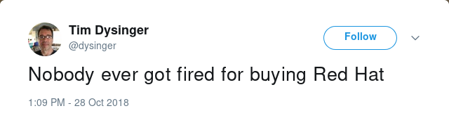

The End of a Red Giant
Thoughts on IBM's acquisition of Red Hat
As I’m sure you’ve now heard, Red Hat is being acquired by IBM.
Reactions have ranged from:
| The first two emotions everyone experienced. |
{kind=link}
to:
|  |
| The classic humourous response. |
{kind=link}
to:
| The classy response. |
{kind=link}
to:
| The thing we're all curious about. |
{kind=link}
to everything in between. If someone were to leak me a copy of the memo-list 2018-October.txt.gz mailman archive, I’d sure love to see that! (Of course I’m joking and I wouldn’t actually ask anyone to do this.)
In any case, the reality about all of this is much more nuanced. I’m going to try and explain my thoughts as factually as I can.
(Yes, the post title is an astrophysics joke.)
 |
| A more interesting variant of the Hertzsprung-Russell diagram. Source: https://xkcd.com/2009/ |
A part of history:
I joined Red Hat in 2014. I became part of history, and felt very lucky to see inside this special unicorn. Red Hat was special because they proved that Copyleft could be a viable business model. Whatever your opinions on corporations and licensing are, this is a very interesting data point.
They started with Linux and GNU, and over the years, added all sorts of projects to the mix:
as well as countless others. Some of these projects even contain entire ecosystems of spawned child projects. (Everything in GNOME is the obvious example.)
In my opinion, in addition to being highly elegant and innovative, these projects all have two things in common:
- They are all under copyleft licenses like the GPL.
- They didn’t receive as much drive from upper management as they deserved.
I can’t prove these two points are related, and they might not be, but I can’t help think it’s worth considering. Some theories:
-
Internal, anti-copyleft rhetoric from some individuals persuaded management to invest in alternate “permissively-licensed” technologies. There certainly are many different internal views on licensing. It’s well-known that there are both FSF-members and ASF-members within Red Hat. The former generally prefer copyleft licensing, while the latter generally prefer permissive licensing. It’s extremely religious and political.
-
Passionate developers who understand software better, prefer to spend and invest their time on copyleft-licensed software where there is a greater chance that future patches and their code won’t be taken proprietary and hidden from everyone. Good software engineers can get quite attached to their code, and keeping it in the open can allow them to continue working on the project, even if they’ve changed companies.
-
Business partners convinced upper management that they were only interested in permissive licensing. This way, they could build off of Red Hat’s shoulders with their proprietary forks, without having to release any of their added “secret sauce”. This feels very much like giving away a lot of value for free, without much of a return on investment. I’m actually surprised the shareholders put up with this, as I always thought it was an easy lawsuit. In fact, AFAICT, Red Hat’s own Annual Reports and other filings only ever mentioned the GPL (copyleft) until 2016, when it suddenly changed a bunch of the text and added mention of the permissive ALv2 license.
Investment in permissively-licensed projects:
On the flip-side of things, Red Hat upper management has invested heavily in many permissively-licensed projects. It’s up to you to determine how much value or revenue they have brought to the company. In general they were all more recent endeavours:
- Openstack
- ManageIQ
- Ovirt / RHEV
- Docker
- Kubernetes
- Openshift
- Opendaylight
I’m extremely biased here, but I’ve found the top first list to be filled with projects that I find extremely useful, and this second list with projects that spend a lot of marketing dollars. What’s good design and what is hype? I’m curious to know if they’ve gotten a return on their investment in these.
Instead of doubling down and continuing the copyleft tradition, new management very publicly pushed the “Open Source” terminology and focused more on non-copyleft projects. Some believe this to be very political, where as others believe that “Open Source” is just toned-down, mainstream nomenclature for “Free Software”. One thing I’m confident of is that you need a healthy balance between copyleft and permissive, and it’s clear to me that we lost that.
In any case, upper management did push a lot of top-down decisions onto engineering and developing these permissively licensed projects. They invested so much money into these ventures that it wasn’t clear to me if we even saw a return. To be clear, I’m not trying to disrespect OpenStack or Docker, there are lots of very talented people working on these projects, but they both have some enormous design flaws too.
Had things been left to engineering, I believe a traditional bottom-up approach would have ensured a longer term, independent prosperity for Red Hat. It might also have delayed a $34B dollar valuation, but it also could have cemented our independence for another 25 years. This is the approach I hope future Red Hat or IBM takes going forward. I’m a supporter, and an investor, and this is what I believe would be good for my stock price and the world.
Even more proof that modern Red Hat dislikes copyleft:
Red Hat recently acquired a GPLv3-licensed piece of software named Ansible. In general, I don’t think this conflicts with my arguments that present-day Red Hat prefers permissively-licensed software, because in general, copyleft doesn’t usually apply to automation software used in the Ansible manner.
The real proof comes when you look at how Red Hat released the previously non-public (proprietary) components from the Ansible project. Instead of licensing them consistently with the parent project (it would be unheard of not to) they opted instead to release them as ALv2 (non-copyleft) instead. You can see for yourself.
Apart from history:
I am incredibly biased. I recently left Red Hat. I’m not angry. I met a lot of great hackers there. But it was clear that the bottom-up, engineer-driven, copyleft days were over, and I wanted to spend some time trying to innovate on something that I believed in. My example is miniscule compared to the scope and engineer-years of some of the top-mentioned copyleft projects, but it does fit the same pattern. (You can support this effort by sending me patches and donating to my patreon!)
Did IBM just kill Red Hat?
No. Most of my favourite parts were already dead. When Red Hat switched all of our company email to Gmail, it was a big nail in the coffin for many of us. If we’re lucky, there will now be less internal pressure on the Red Hat execs to account for their previous investments, and they can instead focus on building good products and saving IBM. It’s surely hard work to constantly have to justify yourself to short-term shareholders and instead focus on long term goals. Red Hat is about 3% (by employee count) of IBM. Maybe that part can hide away inside Big Blue, the same way some of the top Red Hat engineers hid away inside Red Hat and directed some really great engineering.
Conclusion:
Red Hat was never special because “open source”. Red Hat was special because they proved copyleft could be a sustainable business model. This space is wide open again. I look forward to seeing who and how many will take their place.
There are a lot of great engineers at Red Hat that steal away time to work on projects that benefit both the public good and the company. Let’s hope that this work is still funded at IBM or that those individuals find new funders. I’m happy to connect good developers that I know, to companies looking to support their hacking should both parties contact me and ask.
There’s a small chance that the original, bottom-up, engineer-driven, copyleft culture can spread inside IBM. If it does, I think it could benefit IBM. I’m happy to consult on these crazy ideas if any of the 400k employees there would like to ping me. I’m hoping for the best!
In the meantime, I’ll still be using Fedora as long as it plans on staying honest.
Happy Hacking,
James
You can hire James and his team at m9rx corporation.
You can follow James on Mastodon for more frequent updates and other random thoughts.
You can follow James on Twitter for more frequent updates and other random thoughts.
You can support James on GitHub if you'd like to help sustain this kind of content.
You can support James on Patreon if you'd like to help sustain this kind of content.
Thank you
Your comment has been submitted and will be published if it gets approved.
Click here to see the patch you generated.
Comments
Nothing yet.
Post a comment